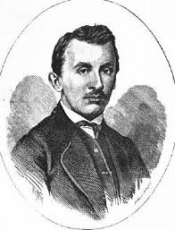
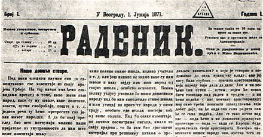
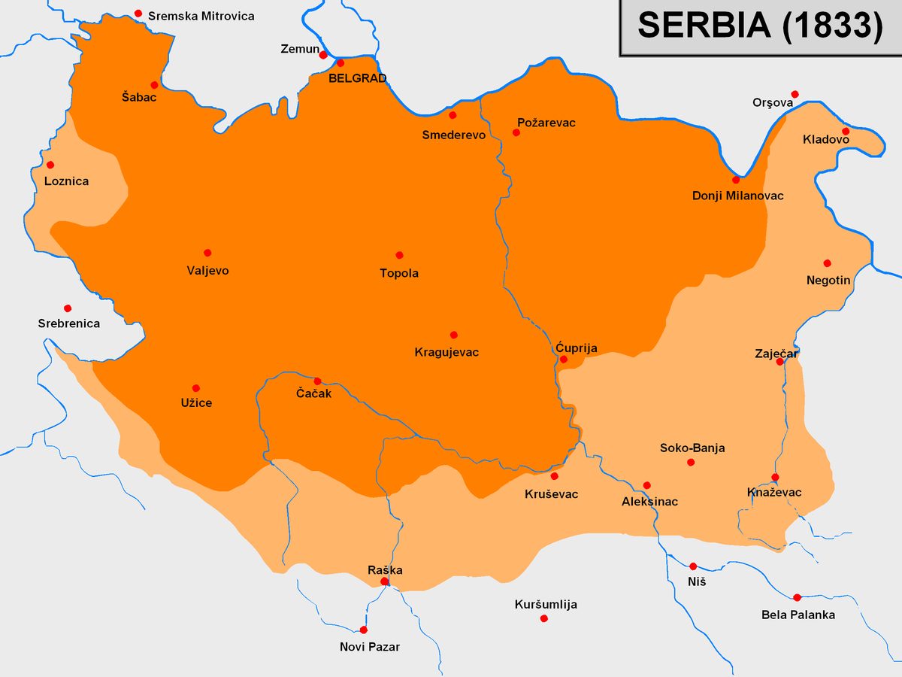

Светозар Марковић (1846—1875) је био утицајни српски социјалистички мислилац, политичар и публициста друге половине XIX века. Издавао је Раденик, први социјалистички лист у Србији и на Балкану.Био жестоки критичар великосрпске политике и пионир идеје Балканске федерације. Одбацио је „историјско право“, то јест обнову Душановог царства, као основу решења српског питања. Говорио је да би покушај обнове ове средњевековне државе, која и није била само српска и на чијем простору су се одиграли иреверзибилни историјски процеси, учинили Србију на спољном плану освајачком, а унутра војно-полицијском државом. Марковић је утемељио федерализам као константу српске левице, као алтернативу великодржавној идеологији заснованој на „историјском праву“. Он је такођер одбацио клерикалну традицију као основу за јединство српског народа, повлачи линију раздвајања са десним популизмом.

Гимназију је учио у Крагујевцу и у Београду, године 1863. У Београду је започео студије технике, које је касније наставио у Петрограду као стипендиста српске владе. У Петрограду је био укључен у рад руских револуционарних кружока. Доцније је прешао да студира у Цирих, у Швајцарској, где је почео да проучава научни социјализам. Као веома млад је почео да се бави публицистиком. Због чланка Српске обмане, објављеног у новосадској Застави изгубио је стипендију, пошто је у овом напису напао цео државни систем у Србији, а посебно бирократију. Oставши без средстава, вратио се у Србију.
1. јуна 1871. године је покренуо "Раденик", први социјалистички лист у Србији и на Балкану. У њему су по први пут објављени, у наставцима, Марксов Грађански рат у Француској и два поглавља из Капитала. Раденик излази две године (1871 - 1872), а потом је 1873. у Крагујевцу издавао лист Јавност. Због напада на власт, године 1874. осуђен је на девет месеци затвора, из којег је изашао тешко нарушеног здравља. Убрзо га је, у двадесет деветој години покосила туберкулоза. Преминуо је 1875. године у Трсту.
Уписао је 1866. Технички факултет Велике школе у Београду. Српска влада га је као одличног студента 1868. упутила на школовање у Цирих. Студирао је на Политехничкој школи у Цириху техничке науке као државни стипендиста. За време боравка у Швајцарској био је близак Светозару Марковићу, али се касније разишао са њим. После једногодишње праксе на изградњи пруге Будимпешта-Беч вратио се у земљу. Иако је по образовању био инжењер, најмање се бавио својом струком.
Светозар Марковић је у својим делима први пут, и то критички, употријебио израз Велика Србија: “ Чим се монархична влада утврдила у земљи, она је одмах почела помишљати да распространи границе своје власти и ван Србије ... Мисао да се Босна и Херцеговина сједине са Србијом почела се ширити и у Србији и код тамошњег народа. То је било начело политике која је позната под именом Велика Србија. ”

Марковић је великосрпску политику Кнеза Михајла сматрао ништавном, јер су против ње биле неодољиве препоне. Прва и најјача препона је била назависна Црна Гора, која је имала исте претензије на Херцеговину, Босну и Стару Србију као и Србија, и која је јасно тежила да оснује сасвим независну српску државу. Друга снажна препона је била босанска властела са њеним давнашњим правима. Марковић је веровао да је немогуће добити Босну мирним путем уколко се властели не ујамче њена старинска права, што би значило оставити босанску рају у ропству. Добити Босну ратом, значи уништити домаћу аристокрацију, а кад би се раја ослободила од ропства, "да ли би се она слагала да дође под српске пандуре, капетане и остале господаре?" Марковић је сматрао да опасност подухвата Велике Србије лежи у чињеници да српски народ живи измешан са другим народима, без јасно одређених географских и етнографских граница, тако да би морао »узети улогу освајача« према суседима: “ Српски народ се с једне стране меша с Бугарима, с друге с Хрватима и с треће с Румунима, а два народа, Бугари и Хрвати, његови су најближи рођаци по крви и језику. Где су границе „сједињених Срба“, нове српске државе? То је тешко остварити, ако не желимо да се посвађамо са свим тим народима ... Српски народ нема никаквих географских или етнографских граница којима би био одређен као једна јединствена целина. Да би се створила држава од пет до пет и по милиона Срба, српски народ би морао да буде у непријатељском односу с Бугарима, Хрватима и Румунима. Морао би да преузме улогу освајача, како то Мађари данас чине.Светозар Марковић, који се и сам залагао за ослобођење Срба који живе под османском или хабзбуршком влашћу, изричито је одбијао улогу Кнежевину Србију као „Пијемонта Јужних Словена“ и политику територијалне експанзије Србије, која би припојила и мешовите области.[6] Он је сматрао да свака нација треба у свом политичком и друштвеном животу да буде самостална, да не буде потчињена ни једној другој нацији.[6] Марковић је изричито одбацивао позивање на „историјска права“ речима: „принцип националности одриче се свих историјских права.“[6] Посебно је сматрао штетним уједињење српских земаља позивањем на Душаново царство, јер су Срби његовог времена живели у четири државе (Аустрија, Турска, Србија и Црна Гора) чија се историјска права „тешко могу ускладити“.[6] Уместо тога, Марковић предлаже стварање Балканске федерације, односно савеза српског народа са другим балканским и јужнословенским народима.[7] Марковић наглашава да би нова српска држава, настала освајањем, по нужди постала војнополицијска и снагу би трошила у одбрани од спољних непријатеља, занемарујући сопствени умни и културни развитак.[7] Марковић оцењује да идеја Велике Србије иде у прилог политици која тежи да у земљи утврди неограничену моћ династије Обреновић.[6] Он је ову „велику мисао“ сматрао изговором за занемаривање далеко важнијих унутрашњих питања Кнежевине Србије, упозоравајући да се »револуционарна идеја о јединству српског народа претворила у идеју штетну по народне интересе«.

Председник српске владе постао је први пут 11. 2. 1891. Председник владе је био 1891-1892. и министар иностраних послова Србије од 21. 3. 1892. до 9. 8. 1892. године. У периоду 1893–1894. био је дипломата, представник српске владе у Петрограду. Због неслагања са унутрашњом и спољном политиком последњег Обреновића, убрзо се разишао и са њим.
После неуспелог Ивањданског атентата на бившег краља Милана 1899, као радикалски првак осуђен је на 5 година затвора, али је одмах помилован и пуштен. Следећих неколико година, до Мајског преврата 1903, био је ван политичке сцене. Укључује се у политички живот 1901, а после убиства Александра Обреновића и повратка на власт династије Карађорђевић (1903), Пашић поново преузима вођство Радикалне странке.
Председник владе по други пут постаје 27. новембра 1904. На овом положају је углавном био све до своје смрти 1926. године. Прецизније, председник владе Србије је био 1904-1918 са три прекида и председник владе Краљевине Срба, Хрвата и Словенаца у периоду 1921-1926 са једним прекидом.
Осим ове велике функције био је пет пута председник Народне скупштине, затим министар спољних послова у периодима 1904-05, 1906-08, 1912-18. потом у Краљевини СХС 1921. Осим тога, Пашић је од оснивања 1881. до своје смрти, водио Народну радикалну странку.
Успешно је водио Србију кроз два балканска рата и кроз Први светски рат. Био је председник делегације Србије на Конференцији мира у Букурешту 1913. Почетком 1915. године, као председник српске владе, Никола Пашић позива јеромонаха Николаја Велимировића у Ниш и упућује га у Енглеску и Америку да пропагира српску праведну борбу и да сузбија аустријску пропаганду против Србије. Био је један од потписника Крфске декларације 1917. Био је председник делегације Краљевине Срба Хрвата и Словенаца на Мировној конференцији у Паризу 1919.
Године 1923. постао је почасни грађанин Панчева.